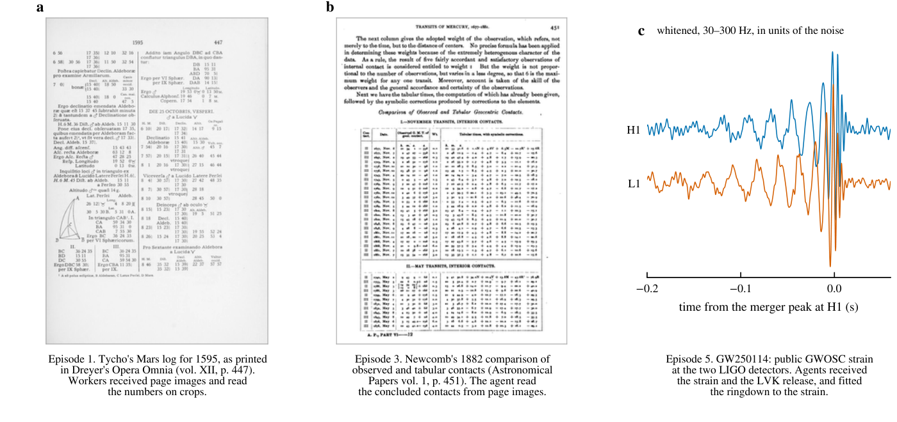
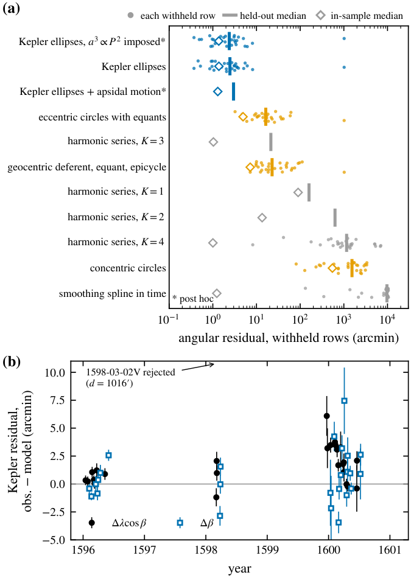
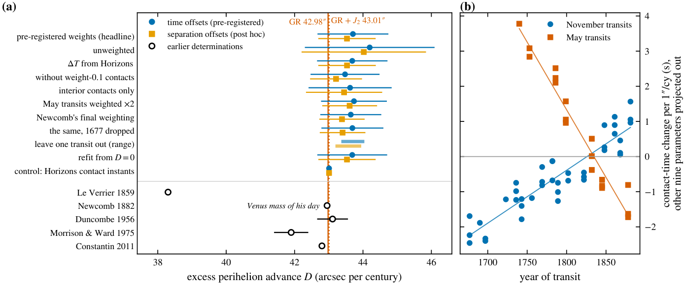
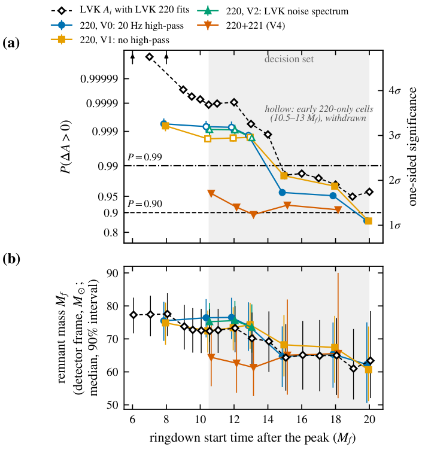
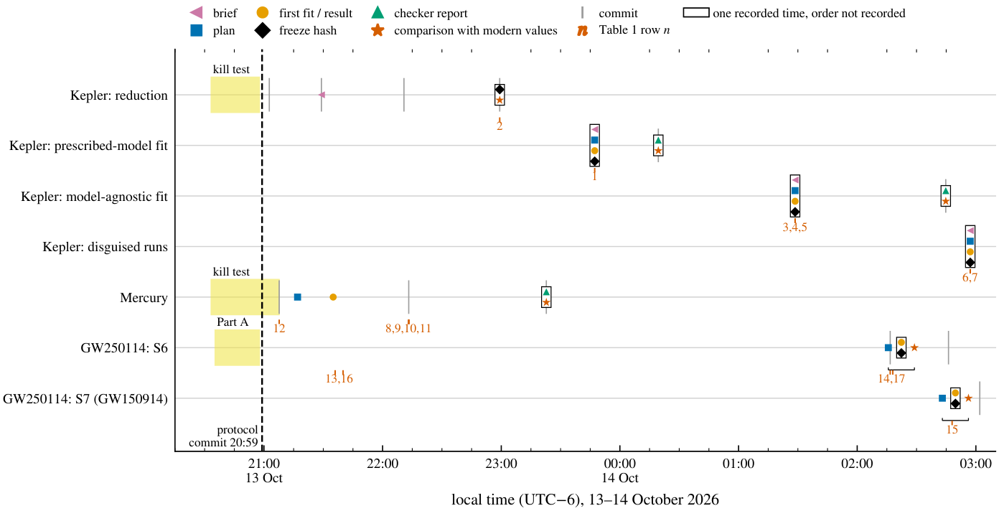

In plain words
Can AI agents redo a classic measurement of physics from the primary record, to a standard a physicist would accept, when they almost certainly know the textbook answer?
I tried it three times, working with AI agents: Kepler's orbit of Mars from Tycho Brahe's own observing logs, the extra advance of Mercury's perihelion from Newcomb's transit timings, and whether the horizon area grew in the black hole merger GW250114. A written protocol kept the expected answer out of the agents' instructions and fixed the comparison with modern values in advance; the one brief that leaked the shape of the answer was caught, and the run repeated. Each result was frozen before that comparison (for Mercury only by commit order, with the headline refitted after the checker's report), and every measurement went to a separate re-analysis agent. The paper reports what came out, and everything that went wrong along the way.

The three results
01Kepler's orbit from Tycho's logs
Six agent workers transcribed 427 Mars sessions from page images of Tycho's logs, with a confidence on every number. The 187 sessions with good quality flags form the frozen data product, at a median residual of 1.38′ against the modern ephemeris, which was used only for verification.
A fitting agent was then told nothing about model families, and every row after mid-January 1596 was withheld. Two Keplerian ellipses about one common point predicted the withheld years to a median of 2.46′. Eccentric circles with equants reached 16.3′, and a harmonic series with no physics missed them by 21′.
Was the agent recognising Mars? Fresh agents received disguised copies of the data, with time rescaled, longitude rotated or mirrored and every label removed. Three runs found two Kepler ellipses again, with held-out medians over the unflagged rows of 2.05′, 2.13′ and 2.02′ (the undisguised fit gives 2.21′ on the same rows), and identified the data as Mars only after the fit. The disguise shows that recognition followed the fit; it cannot show that knowledge played no part in which families the agents chose to try.

02Mercury's perihelion from Newcomb's transit contacts
The record is Newcomb's 58 concluded contacts from 23 transits of 1677–1881, with the weights he printed. By the measurement report's own statement, the instructions named no expected value and no theory; no brief file survives. A Newtonian model of the planets with an extra uniform perihelion advance D gives D = 43.71 ± 1.04″ per century, 0.7σ above the 42.98″ general relativity predicts. Every variant tried lies between 43.2 and 44.3. Run on the modern ephemeris's own contact times, the same pipeline returns 43.007, which checks the pipeline but says nothing about the historical data.

03Did the horizon area of GW250114 grow?
Hawking's area theorem says a black hole merger cannot shrink the total horizon area. I asked that question with the agents' own ringdown fits and the exact probability P(ΔA > 0) that the area grew, under a decision rule fixed before any area was computed.
The earliest reading did not survive. The single-mode fits starting 10.5–13 Mf after the peak gave P of 0.998–0.999, but their remnant mass fell in a way that signals a known single-mode bias. A pre-registered overtone test confirmed it, and those cells were withdrawn. With the overtone included, P is 0.89–0.96 for fits starting 10.5–13 Mf after the peak; the retained cells at 15–18 Mf give 0.91–0.98, and the fit at 20 Mf gives 0.86. That minimum is below the pre-registered 0.90, so the rule says: whether the area grew depends on analysis choices, and with these fits the paper cannot claim it.
This is not evidence against the area theorem, since every combination favours an increase, and it does not show that the LIGO-Virgo-KAGRA result is wrong. The decision is not robust either way: the agents' initial area is 6.6% above LIGO-Virgo-KAGRA's, for reasons mostly unexplained, and a post-hoc check with their value gives a minimum of 0.917, which would read "the data favour an increase". The paper does not claim the area grew, and does not claim it did not.

How the protocol works
The protocol was written on 13 October 2026 and committed before any batch transcription, reduction or fit. Two of these steps are written rules, withholding the answer and fixing the comparison; the rest is the practice each episode followed.
- The brief withholds the answer. Agents get the data and a question: "find the orbit that fits these positions", not "fit an ellipse".
- A kill test with a pass criterion shows the record can be read at all.
- A plan fixes models, outlier rule, uncertainty recipe and decision rule before the result.
- A freeze records the result before it is compared with modern values.
- A checker, a separate agent with read-only access, re-runs the code and grades its findings.
- The comparison is fixed in advance. For Mercury it was 42.98″ per century.
- A record of every run is kept in git, and anything added after a result was seen is labelled post hoc.

What the protocol caught
The failures are part of the evidence, and the paper lists every one of them.
- A brief leaked the shape of the answer, and the checker graded the leak a blocker. The run was relabelled and repeated with no model family named.
- When a fitter attributed an offset to Tycho's data, the checker showed that the data were not at fault.
- A disguised run failed and was reported with its declared rerun.
- The strongest GW250114 cells rested on a known single-mode bias. The checker flagged it, the pre-registered overtone test passed, and those cells were withdrawn.
Explanations failed more often than measurements. Twice the agents' interpretations ran ahead of their evidence, and both times a second agent with different information corrected them. The division of labour that emerged, with agents measuring, a separate agent checking and the author arbitrating, is the method the paper proposes.
What this does not show
The agents know the textbook answers. Withholding the answer, fixing the plan, holding out data and disguising the record narrow what that knowledge can do; none removes it.
The checker is an AI agent, not an independent expert. A human domain expert's reading of each measurement is still due, as are an independent re-transcription of Tycho's logs and a re-reduction of the about 770 individual Mercury rows.
The evidence that plans came first varies. In two episodes it rests on statements, logs and file times rather than on version history, and in GW250114 the single-mode fits predate the plan; the paper's Section 2 says where the record falls short.
GW250114: the claim was withheld, not refuted. The paper does not claim the area grew, and does not claim it did not.
The films
Three short films walk through the records and the results.
Films made with showtime.
Cite
Please cite the paper; for the data and code, also cite the dataset.
@misc{vazquez2026tycho,
author = {V{\'a}zquez, Favio},
title = {From the observations of {Tycho Brahe} to {GW250114}: three results in physics re-measured with the answer withheld},
year = {2026},
publisher = {Zenodo},
doi = {10.5281/zenodo.23410498},
url = {https://doi.org/10.5281/zenodo.23410498},
note = {Preprint}
}
@misc{vazquez2026remeasureddata,
author = {V{\'a}zquez, Favio},
title = {Road re-measured: ringdown posterior samples and code snapshot (commit b6b0b05)},
year = {2026},
publisher = {Zenodo},
doi = {10.5281/zenodo.23410453},
url = {https://doi.org/10.5281/zenodo.23410453}
}
The analyses were run by AI agents under the written protocol, with the author designing the study and arbitrating every result. Text, data and figures are under CC BY 4.0; code is under the MIT licence.